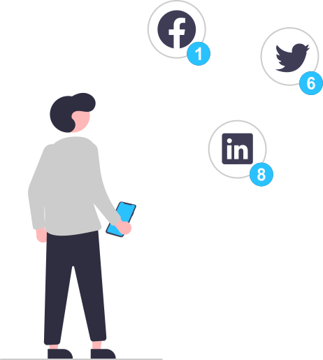

Varenya Jain
Passionate bioinformagician | Approximate knowledge of many things
About

Good to see you here 👋
I'm Varenya Jain, a computational biology researcher from Manhattan. I studied Integrative Biology and Electrical Engineering at the University of Illinois at Urbana-Champaign, where I conducted research on Reinforcement Learning for UAV Relay Positioning at the Coordinated Science Laboratory, implemented parallel processing on a "NExt-generation sequencing Analysis Toolkit" under the National Center for Supercomputing Applications, and tested a novel pipeline to validate Low-Coverage WGS as a reliable and cost-efficient method for assembling phylogenetic markers for the Illinois Natural History Survey. I also started working as a bioinformatician, integrating DRAGEN enrichment-based CNV detection into clinical variant interpretation workflows.
In August 2024, I began collaborating with Peter Robinson, Ronald Wapner, and Michael Duyzend as part of the Fetal Anomalies Repository Leadership Team, a joint initiative between Columbia University's Division of Women's Genetics and the Broad Institute of MIT and Harvard, to develop a genotype-phenotype database for rare diseases within the Fetal Sequencing Consortium. My current work involves training local large language models to extract Human Phenotype Ontology terms from prenatal ultrasound data and creating federated phenopacket repositories. I am currently based out of the Rahel Hirsch Center für Translationale Medizin facility of the Berlin Institute of Health, a substructure under the Charité – Universitätsmedizin Berlin hospital system.
What I do? (DND language for Technical folks)
As a bioinformatics wizard navigating the realms of computational magic, my quest involves unraveling the mysteries of Genomics, Transcriptomics, and Proteomics. Armed with statistical spells and genomic potions, I aim to identify elusive gene and protein targets, tracking sequence mutations and crafting therapies while minimizing long-term side effects. Join me on this epic journey of discovery and innovation!
Okay...for you non-geeks
I specialize in using advanced computer techniques to analyze complex biological data. This data often looks like long strings of letters or large tables with lots of numbers, and it comes from studying various aspects of human diseases, bacterial genomes, metabolite samples, and evolutionary data. By doing this, I aim to uncover important information that can influence the evolution of certain species, develop targeted treatments for diseases, and further the study of DNA and RNA across different organisms. The results of my work are shared through scholarly publications, academic presentations, and code repositories, adding valuable knowledge to the scientific community and potentially helping in the creation of more effective solutions. Make sense?
Outside of work...
When I am not working, I love learning new things. I am a sucker for antique hardware (current favorite is analog radio!), reading about bootloaders and kernels, working out, and playing video games. I also dedicate time towards volunteering to help provide food, clothes, and books to those in my community - both on the East Coast and rural India. I read articles ̶e̶v̶e̶r̶y̶d̶a̶y̶ every month to become a better scientist, and my instagram feed is filled with cute dog videos and enthusiast car modifications. Sunny days make me ̶b̶l̶i̶n̶d̶ ̶f̶r̶o̶m̶ ̶g̶l̶a̶r̶e̶ happy and I am too attached to my Rubix Cube. If you contact me and I do not respond immediately I am likely refilling my coffee or wrestling my dog for the TV remote.
Work

Top Skills
My top skills include analyzing multi-omics data (Metabolomics, Low-Coverage Whole Genome Sequencing, RNA-Seq, Microarray, etc.), applying statistical methods in hypothesis driven study, data wrangling using programming languages, and scripting UNIX shell commands.
Scripting/Programming Languages I've Used'
‣ Bash, Assembly, LC-3 (Patt & Patel's ISA @ UIUC), C, C++, CUDA, R, Python
Tools & Software
‣ GATK, bedtools, SAMtools, STAR, ChAS, Docker, VirtualBox, Google Cloud BigQuery, Franklin by ̶G̶e̶n̶o̶o̶x̶ Qiagen, Illumina Connected Analytics, BaseSpace Sequence Hub (DRAGEN Enrichment, DRAGEN Baseline Builder)
Methods & Concepts
- Human Phenotype Ontology
- Dimensionality reduction methods (PCA, GPA, hierarchical clustering)
- Calling and Annotating mutations/genetic aberrations (CNVkit, ClinVar)
- Statistical Analysis (Pearson/Spearman correlation, student t-test, wilcox rank sum test, ANOVA)
- Metabolomics & Proteomics Pipeline Development
- Untargeted LC-MS Analysis and Targeted Analyses
- Genomic Pipeline Management (FASTA, FASTQ, SAM, BAM, VCF)
- Implementation of Bioinformatics Algorithms (Smith–Waterman, BLAST, Localized String Alignment)
- Server Setup and Database Management (AnyConnect, Debian, SRA)
- Phylogenomic Sequence Analysis and Alignment/Assembly Strategies (phyluce, BUSCO)
- Coverage Estimation (Jellyfish k-mer counting, kmergenie)
- Read Trimming (illumiprocessor, BBDuk)
- Genome Assembly with SPAdes
- Sequence Search using Probe Sets
Contact
If you want to reach out for collaborations, ideas or just to chat – you are very welcome to contact me.
The quickest way to reach me is via LinkedIn although email works too (I try to check my emails regularly).
Varenya Jain
Bioinformatics Scientist
Shoot me a quick email!